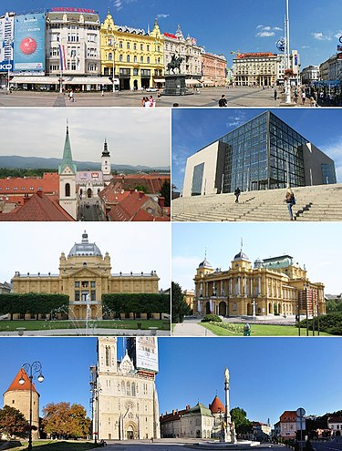
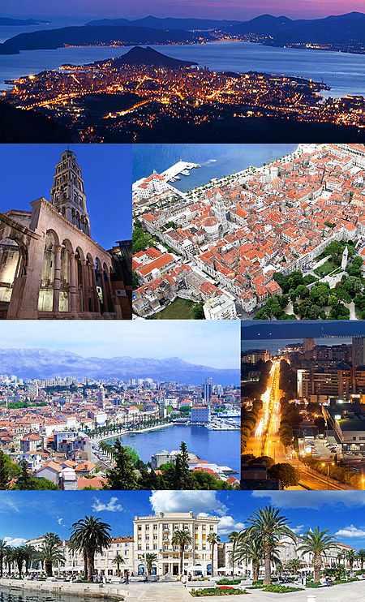
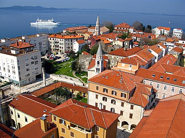
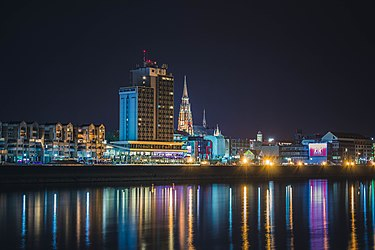

Ante's blog
ŠTO POSJETITI U HRVATSKOJ?
Zagreb glavni grad Republike Hrvatske, i najveći grad u Hrvatskoj po broju stanovnika. Šire područje grada okuplja više od milijun stanovnika.

Split je najveći grad u Dalmaciji, i po broju stanovnika drugi najveći grad u Hrvatskoj.Svetac zaštitnik Splita je sveti Dujam (Sveti Duje),

Zadar je hrvatski grad na Jadranskom moru, središte Zadarske županije i šireg regionalnog kompleksa sjeverne Dalmacije i Like, unutar europske NUTS 2 regije Jadranske Hrvatske. Po broju stanovnika drugi je grad u Dalmaciji, a peti u Republici Hrvatskoj.

Osijek je grad u istočnoj Hrvatskoj. Smješten je u ravnici na desnoj obali rijeke Drave između 16-og i 24-og kilometra od ušća u Dunav.
Najveći je grad u Slavoniji, četvrti po veličini grad u Hrvatskoj, te je industrijsko, upravno, sudsko i kulturno središte Osječko-baranjske županije.
